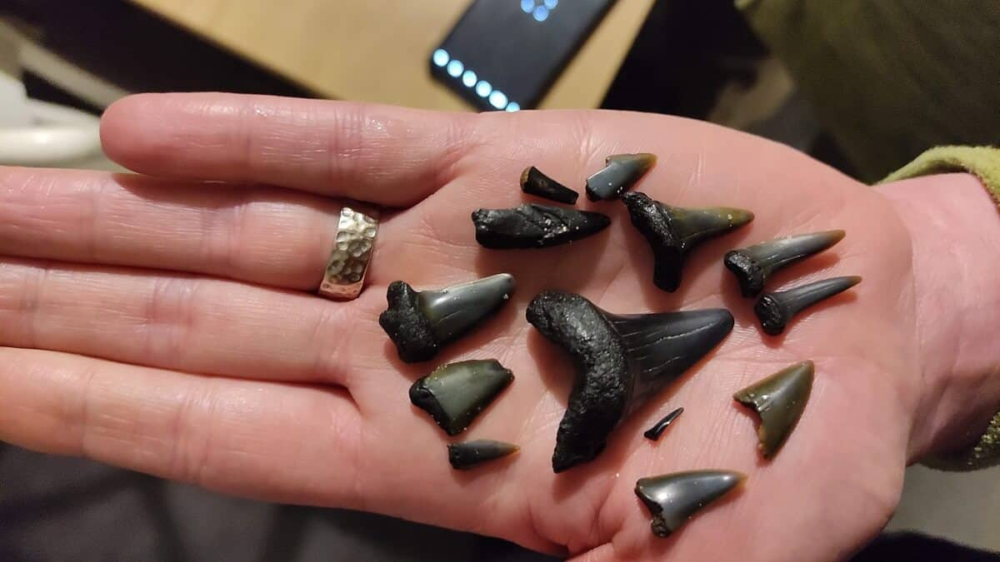

Haaientanden zoeken in Zeeland

Net over de grens kan je met wat geluk gemakkelijk haaientanden vinden.
Perfect voor jouw volgende halsketting!
Wanneer kan je haaientanden vinden?
Haaientanden kunnen altijd aanspoelen, maar er zijn enkele factoren die
je zoektocht een stuk makkelijker kunnen maken:
-
Seizoen: In de zomer is het moeilijker om
haaientanden te vinden, omdat er meer mensen op het strand zijn.
-
Weer: Na een storm is het zand omgewoeld en liggen er
meer haaientanden op het oppervlak
-
Getij: Haaientanden zijn enkel te vinden bij eb.